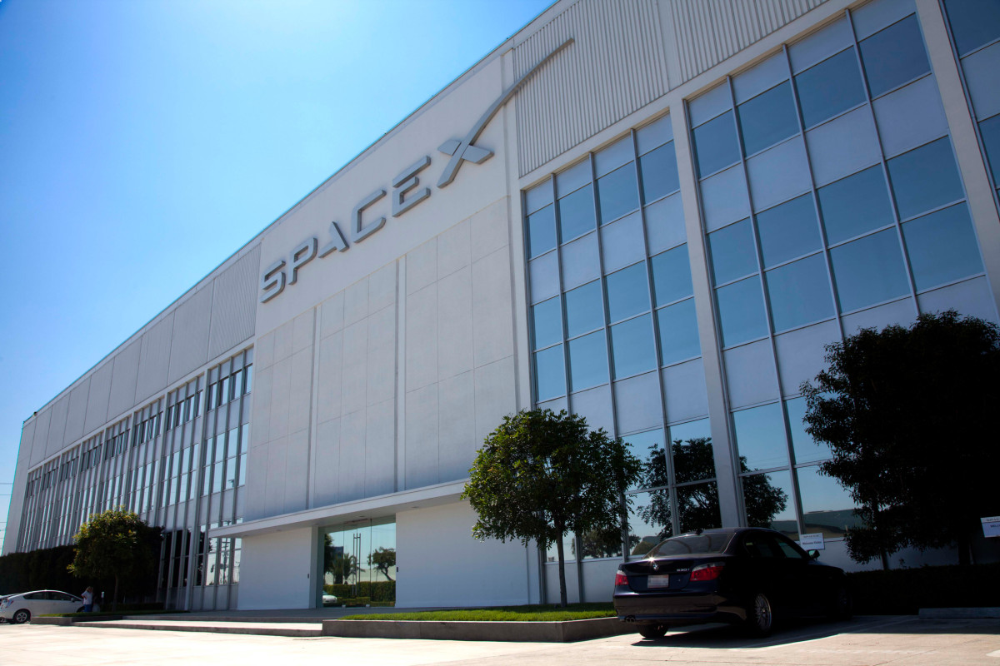
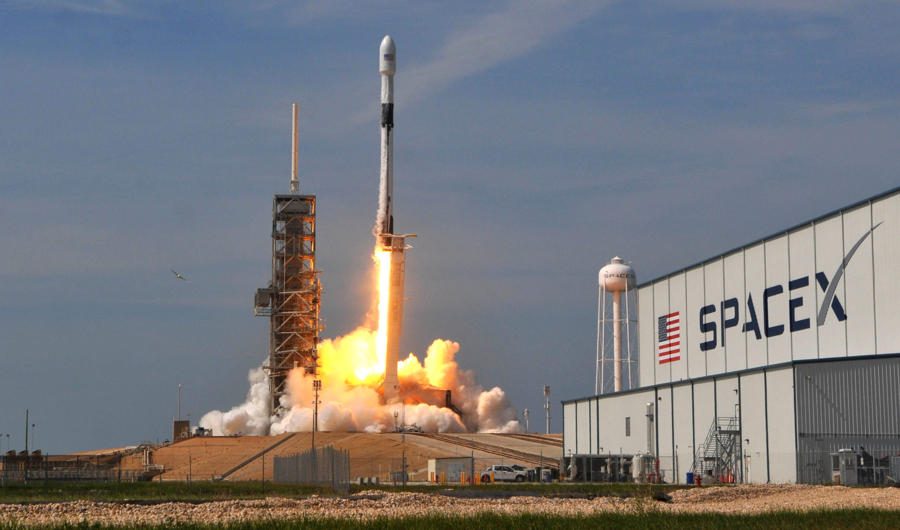
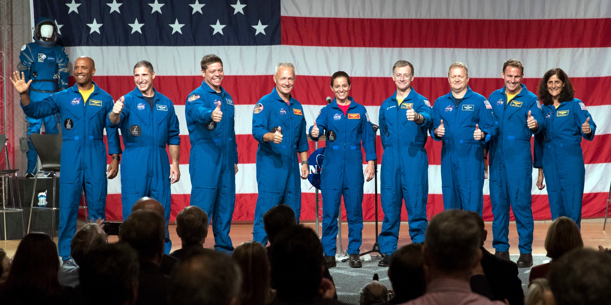
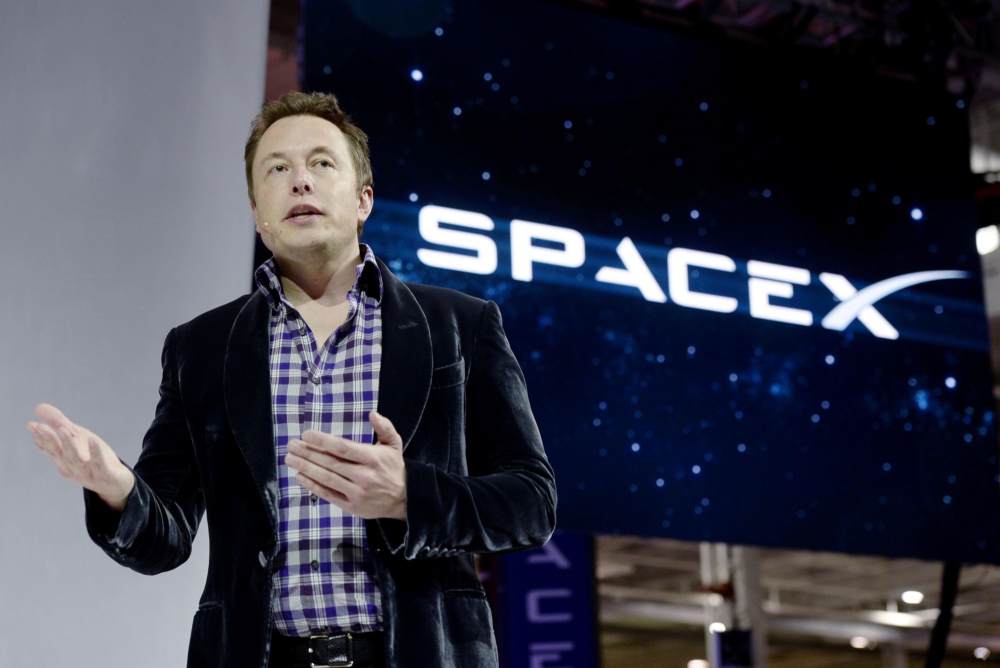

- 
- 
- 
- 

FALCON 9
Falcon 9 is a two-stage rocket designed and manufactured by SpaceX for the reliable and safe transport of satellites and the Dragon spacecraft into orbit. Falcon 9 is the first orbital class rocket capable of reflight. SpaceX believes rocket reusability is the key breakthrough needed to reduce the cost of access to space and enable people to live on other planets. Falcon 9 was designed from the ground up for maximum reliability. Falcon 9’s simple two-stage configuration minimizes the number of separation events -- and with nine first-stage engines, it can safely complete its mission even in the event of an engine shutdown. Falcon 9 made history in 2012 when it delivered Dragon into the correct orbit for rendezvous with the International Space Station, making SpaceX the first commercial company ever to visit the station. Since then Falcon 9 has made numerous trips to space, delivering satellites to orbit as well as delivering and returning cargo from the space station for NASA.
DRAGON
Dragon is a free-flying spacecraft designed to deliver both cargo and people to orbiting destinations. It is the only spacecraft currently flying that is capable of returning significant amounts of cargo to Earth. Currently Dragon carries cargo to space, but it was designed from the beginning to carry humans. The first demonstration flight under NASA's. Commercial Crew Program launched on March 2, 2019 at 2:49 a.m. ET. The Dragon spacecraft successfully docked with the space station ahead of schedule at 6:02 a.m. ET on March 3, 2019, becoming the first American spacecraft in history to autonomously dock with the International Space Station.

FALCON HEAVY
Falcon Heavy is the most powerful operational rocket in the world by a factor of two. With the ability to lift into orbit nearly 64 metric tons (141,000 lb) ---a mass greater than a 737 jetliner loaded with passengers, crew, luggage and fuel--Falcon Heavy can lift more than twice the payload of the next closest operational vehicle, the Delta IV Heavy, at one-third the cost. Falcon Heavy draws upon the proven heritage and reliability of Falcon 9. Its first stage is composed of three Falcon 9 nine-engine cores whose 27 Merlin engines together generate more than 5 million pounds of thrust at liftoff, equal to approximately eighteen 747 aircraft. Only the Saturn V moon rocket, last flown in 1973, delivered more payload to orbit. Falcon Heavy was designed from the outset to carry humans into space and restores the possibility of flying missions with crew to the Moon or Mars.